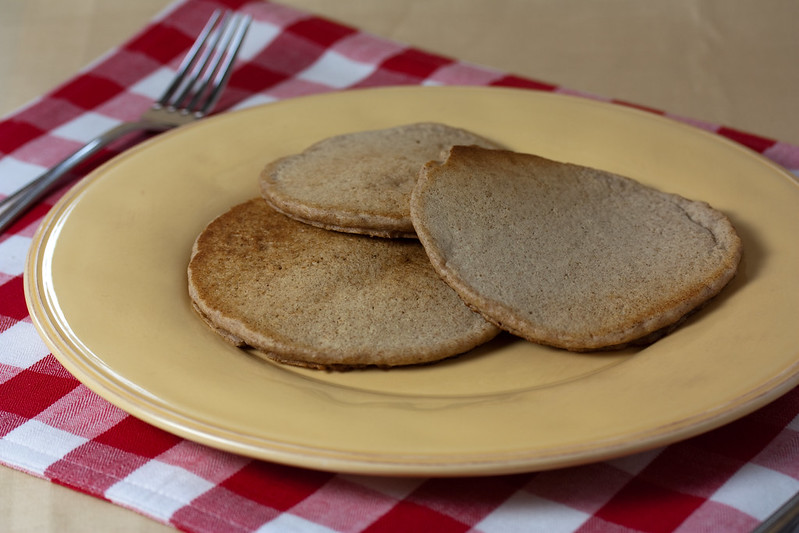

Home
Pancake

Description
This here is a healthy protein rich vegan
pancake that you can have for breakfast.
Ingredients
- Some vegan butter.
- 1 1/2 cups rolled oats.
- 1 banana.
- 1 cup vegan milk (soy milk).
Steps
- Turn on burner to medium.
- Put pan on burner.
- Put some vegan butter onto pan.
- Put banana, oats, and vegan milk into blender in the order stated.
- Turn blender on to highest setting.
- When done blending pour blender contents into pan.
- Cook for five minutes.
- Flip pancake over.
- Lather some more vegan butter over the top.
- Cooke for four more minutes.
- Remove pancake for pan by placing it on a plate.
- Turn off burner.
- Remove pan from burner.
- Serve pancake.